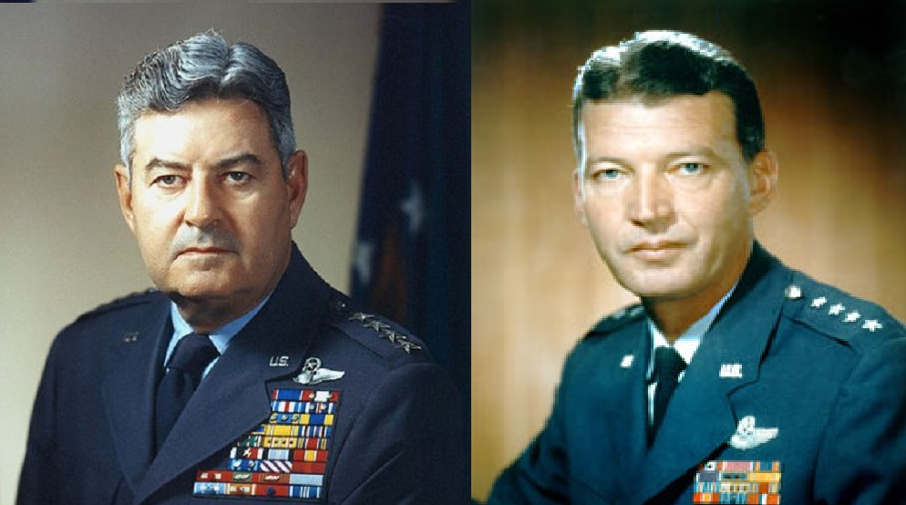

|
 “It’s really quite simple: LeMay terrorized me. Schriever mesmerized me.” Highlights In this piece we’ll share: Introduction, Comparisons, LeMay, Schriever, some thoughts on how the Pentagon plays its version of Diplomacy, and which Dippers might be like LeMay or Schriever. Introduction “The number of titles I considered for this article and the number of times I changed it suggests the complexity of the subjects. However, I kept coming back to that simple rule, K.I.S.S.” I’ve written elsewhere about my reaction to LeMay’s bombastic speech in San Diego in 1968 suggesting we should or could nuke Vietnam, China and/or Russia if need be; given when he was running for vice president on George Wallace’s American Independence Party ticket, so I won’t repeat it here. A few years earlier I had an opportunity to hear Schriever deliver a re-hash of his 1957 speech in San Diego. I think it’s important enough that I’ve reprinted the whole thing below. Visionary speech by Major Gen. Bernard A. Schriever: ICBM - a Step Toward Space Conquest at the Astronautics Symposium, San Diego, California, in February 1957 In February 1957, General Bernard Schriever (1910-2005) spoke at the First Annual Air Force Office of Scientific Research Astronautics Symposium at San Diego, California. At that time, American government deliberately played down the role of satellites in the future and in funding priorities. The military particularly had been instructed to avoid any mentioning of military space applications in public in order not to trigger debate over freedom of space. As Schriever later recalled: "In 1957, I made a speech at a joint symposium in San Diego about how the missile program was really creating the foundation for space. The day after I made the speech I got a wire signed by Secretary [of Defense] Wilson telling me never to use the word space again in any of my speeches. In October [1957], Sputnik came along, and for the next 18 months or so after, I was going back and forth to Washington at least four times a month testifying before committees or meeting in the Pentagon as to why we couldn't move faster in the missile program." I was only 9 years old at the time of his original speech, but I remember the new Convair/General Dynamics plant being built in San Diego to build the Atlas missile. The plant with its huge fountain and pool in front (ready to provide an in house reservoir in case of fire), the engine testing center in Murphy Canyon, the thousands of homes being built in Clairmont to house the engineers, etc. Some years later I got a chance to hear him speak in person at the old ARDC, now SMC, located at the LAAFB. A copy of the Symposium report is available online for $19.91. Comparisons “So much alike and yet so different.” Sometimes opposites attract but in the LeMay-Schriever relationship it was more like an attempt to mix oil and vinegar: no matter how much you beat it, it immediately separates. So it was with these two. The two men were superficially and cosmetically very much alike or as much alike as two men in the same blue suit, with four stars on each shoulder, a cover with lots of gold-brain, and a regulation style haircut could be. But the differences were also readily apparent. LeMay looked like a miscast sheriff from High Noon, not somebody Jimmy Stewart would play in The SAC Story. Schriever looked like a movie star and his second wife was a real singing star in her own right, right down to her own star on Hollywood Blvd. LeMay made the cover of Time three times, usually with a cigar hanging from his mouth. Schriever made the cover of Time magazine once, with a missile in the background. LeMay was featured in PBS’s The American Experience program and Schriever in a C-SPAN interview. LeMay was commander of SAC from 1948 – 1961 and then Air Force Chief of Staff from 1961 – 1965. He regularly wore nine rows of ribbons and decorations, including thirteen awards he got from foreign countries, including Japan’s third highest honor. LeMay is buried at USAF Academy. Schriever is buried in Arlington National Cemetery in section 34, lot 162, and just a few rows from where John J. Pershing is buried. He has a base in Colorado Springs named for him (note it has no run way). At the time he was the only living person to have a base named for him. In addition, his former command facility at LAAFB is also named for him. LeMay was loud, brash, egotistical and brilliant, but most of his airmen would have followed him through the gates of hell; and many of them did over Germany. Shriver was quiet, thoughtful, unassuming and a genius. LeMay had many nicknames. Some were more suitable for an Air Force “dining in” function than a campaign speech. Among them were: “The Big Cigar,” “Badass,” “Sunday Punch,” “Old Iron Pants, “The Demon” and “Bombs Away LeMay.” and facetiously as “The Diplomat” Schriever had one nick-name and there’s some disagreement among the sources on whether it was “Bernie” or “Bennie.” LeMay was a general for wartime. Shriever was a general for peacetime. LeMay’s wore the insignia of a command pilot vs. Schriever’s command missileer badge. Schriever created the new weapons (missiles). LeMay figured out how to use them next to the old weapons (bombers) that he so dearly loved. LeMay was a Goliath with a sword. Schriever was a David with a sling-shot. LeMay’s words spoke for him. Schriever’s written words inspired others. They were as different in death as they were in life. Compare for yourself their backgrounds, education, families, places of burial, etc. LeMay had an Air Force of some 47 SAC bases, 1,768 bombers, 700 or so tankers, and around 250,000 personal Schriever created from scratch an Air Force of some 129 Atlas, 63 Titans, and 1,000+ Minuteman missiles; which he turned over to LeMay’s operational control. Currently SAC’s successor includes 450 Minuteman III with 3 MIRVed warheads, 46 Peacekeepers with 10 MIRVs (if they’re still around), grouped into various wings and squadrons and less than a hundred bombers, many of which can no longer carry nuclear weapons. Planes came and went and so did their bases, down from 47 to about 10. LEMAY“Think boldly and then make it happen.” Curtis LeMay
Curtis LeMay’s gruff demeanor led many to believe that he was mean and detached, but these reports were far from accurate. While LeMay rarely smiled and was often uncommunicative, the general’s behavior was the result of a preoccupation with the important problems affecting him and his men. Those with whom he worked could attest to his altruism, as his continual efforts on behalf of his enlisted forces clearly showed.
Official Biography Before he retired as Chief of Staff of the Air Force in 1965, General Curtis Emerson LeMay had become a symbol of the nation’s air power through his combat experience in World War II and his leadership in building up the Strategic Air Command. An Ohio native, General LeMay was born in Columbus on November 15th, 1906. After attending, the city’s public schools, he graduated from Ohio State University with a degree in civil engineering. Following graduation, he entered the Armed Services as a flying cadet, completed his pilot training at Kelly Field in Texas and received his commission as a second lieutenant in the Air Corps Reserves in 1929. In 1934, he married Helen Maitland of Lakewood, Ohio. General LeMay’s first tour of duty was with the 27th Pursuit Squadron in Michigan where he served in various assignments in fighter operations before transferring to bomber aircraft in 1937. The next year, the General took part in the first mass flight of B-17 Super Fortresses to South America. This won the 2nd Bomb Group the Mackay Trophy for outstanding aerial achievement. Prior to the entry of the United States into World War II, LeMay helped pioneer air routes over the South Atlantic to Africa and over the North Atlantic to England. By 1942, the then Colonel LeMay had organized and trained the 305th Bombardment Group and led them into combat in the European theater. During the war he developed formation techniques that were later adapted to the B-29 Flying Fortresses over the Pacific. As the commanding General of the Third Bombardment Division in England, he led the famous Regensburg Raid deep into Germany and Africa. In July of 1944, the General transferred to the Pacific to direct B-29 activities in the China-Burma-India theater, first as the commanding General of the 21st Bomber Command and later as commanding General of the 20th Air Force. At the end of the war, the General made a dramatic return to the United States, piloting a Super Fortress B-29 on a non-stop record flight from Japan to Chicago. Upon arriving in the States, he was assigned to the Pentagon as the first Deputy Chief of Air Staff for Research and Development. In October of 1947, General LeMay was selected to command the U.S. Air Forces in Europe, where he organized air operations for the Berlin Airlift. But within a year he was back in the United States to assume command of the newly formed Strategic Air Command at Offutt Air Force Base in Nebraska – the future nerve center of a worldwide bomber/missile force. In nine years as the SAC leader, he built an all-jet bomber force from the remnants of World War II. And under his leadership, plans were laid for the development of an intercontinental ballistic missile capability. In July 1957, General LeMay was appointed Vice Chief of Staff of the United States Air Force, a capacity he served for four years until he was named Chief of Staff. Still rated a command pilot and qualified to fly jet aircraft, the General has won many awards from his government, and those of other nations, including the Distinguished Service Cross, the Distinguished Service Medal with two oak leaf clusters, the Distinguished Flying Cross with two clusters and the Air Medal with three clusters. In an essay he wrote looking back at his career, General LeMay said, “I am convinced that one of my chief compensations has consisted of performing important and interesting work in association with highly motivated people who occupy a respected position in our society. “I have always valued highly the opportunity,” he added, “to serve as a professional among professionals in the defense of our country and to observe the evidence of loyalty and teamwork that stands out up and down the line in a top-flight outfit.” General Curtis LeMay died on October 1st, 1990. Curtis LeMay is an inductee of the International Aerospace Hall of Fame in San Diego, CA and the National Air Hall of Fame at Wright-Patterson AFB, Dayton, OH. Four-Star generals don’t live like ordinary people. When LeMay was commander of USAF in Europe he lived in a 102 room castle/palace. His wife managed to cut the staff from 34 (including one ex-NAZI) to 17. When he was USAF C/S he lived in a 15 room house at Bolling AFB, with a staff of four servicemen to look after him. I couldn’t find anything about the Air Force’s Quarters 1 for its highest-ranking officer but you can find information on wiki about the Navy’s Quarters A at the Washington Navy Yard, the residence of the Marine Corps Commandant at the same base, and even the Army’s Quarters 1 at Ft. Meyer. LeMay Sources Online Biographies
Quotes from LeMay Lesson learned: A quotation is not always what it seems. The first batch are often abbreviated (author and general subject are on the site). The second batch is more complete and includes details on the source and the occasional comment. The third batch is not shown because they duplicate the first two batches, but they include a commentary and relevant picture. From Brainyquotes
From wikiquote "There are no innocent civilians. It is their government and you are fighting a people, you are not trying to fight an armed force anymore. So it doesn't bother me so much to be killing the so-called innocent bystanders." Source: Sherry, Michael (September 10, 1989). "The Rise of American Air Power: The Creation of Armageddon", p. 287 (from "LeMay's interview with Sherry," interview "after the war," p. 408 n. 108). Yale University Press. ISBN-13: 978-0300044140. "My solution to the problem would be to tell [the North Vietnamese Communists] frankly that they've got to draw in their horns and stop their aggression or we're going to bomb them into the Stone Age. And we would shove them back into the Stone Age with Air power or Naval power–not with ground forces." Mission With LeMay: My Story (1965), p. 565. In an interview two years after the publication of this book, General LeMay said, "I never said we should bomb them back to the Stone Age. I said we had the capability to do it. I want to save lives on both sides"; reported in The Washington Post (October 4, 1968), p. A8. Many years later LeMay would claim that this was his ghost writer's overwriting. "Killing Japanese didn't bother me very much at that time... I suppose if I had lost the war, I would have been tried as a war criminal.... Every soldier thinks something of the moral aspects of what he is doing. But all war is immoral and if you let that bother you, you're not a good soldier." On the morality of the firebombing campaign. " I'd like to see a more aggressive attitude on the part of the United States. That doesn't mean launching an immediate preventive war..." Mission with LeMay: My Story (1965), p. 559. "...Native annalists may look sadly back from the future on that period when we had the atomic bomb and the Russians didn't. Or when the Russians had acquired (through connivance and treachery of Westerns with warped minds) the atomic bomb - and yet still didn't have any stockpile of the weapons. That was the era when we might have destroyed Russia completely and not even skinned our elbows doing it." Mission with LeMay: My Story (1965), p. 560-561. "China has The Bomb. [...] Sometime in the future--25, 50, 75 years hence--what will the situation be like then? By that time the Chinese will have the capability of delivery too. That's the reason some schools of thinking don't rule out a destruction of the Chinese military potential before the situation grows worse than it is today. It's bad enough now." Mission with LeMay: My Story (1965), p. 561. "We went over there and fought the war and eventually burned down every town in North Korea anyway, some way or another, and some in South Korea too.… Over a period of three years or so, we killed off – what – twenty percent of the population of Korea as direct casualties of war, or from starvation and exposure?" Strategic Air Warfare: An Interview with Generals (1988) " If I see that the Russians are amassing their planes for an attack, I'm going to knock the shit out of them before they take off the ground." Conversation with presidential commissioner Robert Sprague (September 1957), quoted in Kaplan, F. (1991). The Wizards of Armageddon. Stanford University Press. Page 134. "We’re at war with Japan. We were attacked by Japan. Do you want to kill Japanese, or would you rather have Americans killed?" From his autobiography, also requoted in Rhodes, 'The Making of the Atomic Bomb', p. 596 "As far as casualties were concerned I think there were more casualties in the first attack on Tokyo with incendiaries than there were with the first use of the atomic bomb on Hiroshima. The fact that it's done instantaneously, maybe that's more humane than incendiary attacks, if you can call any war act humane. I don't, particularly, so to me there wasn't much difference. A weapon is a weapon and it really doesn't make much difference how you kill a man. If you have to kill him, well, that's the evil to start with and how you do it becomes pretty secondary. I think your choice should be which weapon is the most efficient and most likely to get the whole mess over with as early as possible." The World at War: the Landmark Oral History from the Classic TV Series, p. 574 "I'll tell you what war is about, you've got to kill people, and when you've killed enough they stop fighting". Quoted by Richard Rhodes in Wikipedia: The Making of the Atomic Bomb The following quotes come with commentary and a picture. Books by or about LeMay There are many books listed on Amazon.com by and about LeMay, as well as the Cold War. Some generals (Washington, Jackson, and Eisenhower) make the transition from “The Pentagon” to the White House easily. Some (Sherman, MacArthur, LeMay) didn’t. SCHRIEVER“Yes, he was an egghead --- in the best sense of the word.” If LeMay was a man who led from the cockpit and inspired his men by his personal example, Schriever was a man who led the way through the halls of Congress and inspired his men by his vision. He had a remarkable ability to listen, ask questions, and to lead using the following step-by-step process: Conceptualize, Management, Prioritize, Research & Design, Fabrication, Testing, Procurement functions, Operational (although this more often fell into LeMay’s bailiwick). Years ago someone said, “Young man, plead your case well the first time because you probably won’t get a chance to plead it a second time.” Bernard Schriever learned that lesson well --- twice. The first time was during his briefing of Ike on the needs and wants for an ICBM in the White House. The second -and many other- times was his stock “ICBM – A Step Toward Space Conquest” speech that he first gave in 1954 San Diego and which I heard him repeat some years later. The first speech, for an audience of one, the CinC, was important, but the second speech, for a whole generation to come, was one for the ages,, or at least the modern age. Schriever put the fears of WWII and Korea, and the doubts of the Cold War behind us and set a new, positive goal, space ahead of us. It was a goal his next CinC would embrace with vigor in another historic speech in 1961, Bernard Schriever
One of Schriever’s few big defeats came in 1960 when the AF lost much of its reconnaissance programs mission to a new organization, the NRO created by the CIA and DOD. In 1954, Schriever became commander of the Western Development Division of the Air Research and Development Command, with responsibility for missiles. He initiated development of the Atlas, intercontinental ballistic missile, Titan ICBM, and the Thor intermediate range missile. He was also responsible for their production and deployment. Later, Schriever commanded the Ballistic Missile Division and directed the Minuteman ICBM program. As commander of the Air Force Systems Command, he led the efforts to perfect reliable missiles and satellites for national defense and the nation’s space program. Official Biography General Bernard Adolph Schriever (September 14, 1910 – June 20, 2005), also known as Bennie Schriever, was a United States Air Force general. He was born in Bremen, Germany, and after immigrating to Bernard Adolf Schriever’s entry into aviation was in the year 1933, after he earned his wings in the Army Air Corps Reserves. His first temporary tour of duty was as a bomber pilot at March Field. Schriever subsequently began flying the airmail in an open cockpit biplane in the dark days of 1934. Not long afterwards, he transferred to the Canal Zone and served as aide to the commander of the 19th Composite Wing. Reverting to inactive status, Schriever became a pilot for Northwest Airlines. But he could not stay away from military life and, in 1938, received a commission in the regular Army. Soon, Schriever received orders to Wright Field to serve as a test pilot, and he completed the engineering school there. Schriever later earned a master’s degree from Stanford University. After the attack on Pearl Harbor, Schriever went to the Southwest Pacific as a B-17 pilot and took part in major campaigns, flying 63 combat missions. Later in the war, he commanded the advanced headquarters of the Far East Service Command, a vital link in winning the war. After the war, Schriever served as chief of the Air Force’s Scientific Liaison Branch. Upon graduation from the National War College, he became Assistant Chief for Development Planning. By this time, Schriever had earned a reputation for sound judgment and foresight. He said: “Obsolete weapons invite national disaster,” and preached the potential of missiles wherever he went. Meanwhile, the Air Force had developed a contract to develop the Atlas Intercontinental Ballistic Missile. But when major difficulties arose, the contract was canceled. At the same time, however, the Air Force began development of the “Matador” missile, followed by the “Snark”, and then the “Navajo”, all of which helped to advance missile technology. After the Air Force reinitiated development of the Atlas, the United States exploded its first thermonuclear bomb in 1952. This event demonstrated the power of a nuclear warhead that could fit into the Atlas nosecone. But the Soviet Union also exploded a nuclear bomb in 1953. The Air Force’s Trevor Gardner, believing the nation was in dire peril, established the Strategic Missile Evaluation Committee in response. This committee quickly recommended that the Atlas be accelerated under a new strong management team. As a result, Schriever became Assistant to the Commander of the Air Research and Development Command, and headed its secret new Western Development Division, with complete authority over the Atlas program. Almost immediately he set up headquarters in an abandoned schoolhouse in Inglewood, California, and established a remarkable organization to manage the largest peacetime weapons development program in history. Schriever utilized the concept of concurrency to accelerate the Atlas development. By December 1954, the size of the revised Atlas, with a thermonuclear warhead, was reduced so that it only required three rocket engines. Soon Schriever realized that, because of the backup systems being developed for the Atlas, a second generation ICBM could be created at a small cost increase. So important to national security was this project that in 1955 the military undertook development of the 2-stage Titan ICBM. When the National Security Council asked Schriever for an intermediate range ballistic missile, he revealed plans for the Thor missile, and soon after President Eisenhower gave his programs the highest national priority. By 1956, the consensus was that Schriever’s Western Development Division would train Thor operational units and Curtis Lemay’s Strategic Air Command would be responsible for their combat readiness and deployment. With the first successful launch of a Thor in 1957, the nation had officially entered the Space Age. But soon after Schriever’s organization was renamed the Ballistic Missile Division, the Soviet Union shocked the world when it launched its Sputnik-1 satellite into Earth orbit. Fortunately, a series of successful Thor missile launches proved the missile’s worth, and the U.S. made plans for their production and operational deployment. A series of Atlas tests also achieved success in 1957. In early 1958, Schriever began development of the third ICBM, the Minuteman, capable of launch from an underground silo. Americans were elated when Alan Shepard launched into space aboard his Freedom-7 spacecraft and achieved the first suborbital flight. Later, John Glenn orbited the Earth in his Friendship-7. By 1962, Schriever was heavily involved in missile site activation and deployment of operational Titan and Minuteman missiles to SAC. As the Minuteman force grew, it became a vital part of the strategic deterrent force to counter any nuclear attack. Also, new generations of improved missiles were in development, and Schriever supported NASA’s manned space programs by providing modified Atlas and Titan boosters and launch services at Cape Canaveral. At the same time, the initial defense satellite communication system was launched to provide the first global telecommunications system for the Department of Defense. In 1965 Schriever became director of the Manned Orbiting Laboratory Project to determine Man’s defense capabilities in space, and the first simulated “MOL” went placed into orbit by a Titan missile. When Bernard Adolf Schriever retired in 1966, he left behind a new kind of Air Force, far different than that which he originally entered 33 years before. Today, its ballistic missiles and its communications and detection satellites not only provide the nation with an unparalleled aerospace capability to preserve the peace, but they all reflect his presence and personal contributions. Bernard Schriever died on June 20th, 2005. He was 94 years old. Schriever Sources Online Biographies can be found on wikipedia and various government sites. Interviews A lengthy video post-retirement interview with Schriever can be found on C-SPAN 3. Others can be found in Sheehan’s book. However, some of Sheehan’s interviewees later said they were misquoted or Sheehan was, put simply, wrong. Quotations Schriever may not have as many flamboyant quotes on the record as LeMay but in his career he gave two talks that have stood the test of time. The first was on 28 July, 1955 in the White House Broadcast Room (See Ike’s Bluff: President Eisenhower’s Secret Battle to Save the World by Evan Thomas, 2012, Little, Brown Co., , p. 183-185.). The second is discussed and reprinted below. Gen. Bernard Schriever, leader of the air force’s space and missile efforts during the 1950s and 1960s, tried to develop deterrence through strength and capability, not a threat of mutual assured destruction. “I am looking for ways to avoid killing people…We need to do something other than find ways to kill people better.” In 1961 Schriever stated, “Several decades from now, the important battles may be … space battles, and we should be spending a certain fraction of our national resources to ensure that we do not lag in obtaining space supremacy. The mission is to maintain the peace.” Books by or about Schriever "The Marshal vs. The General" Ironically, on that day millions of Americans were reading the latest issue of Time magazine, a hugely important publication at the time, and featured on the cover was a portrait of the Soviet premier, Marshal Nikolai Bulganin, who looked like a constipated Col. Harland Sanders in his cover portrait. Part of the Soviets’ charm-offensive included: BIG FOUR: Surprise Party (Monday, July 18, 1955) It was the first press conference ever held by a Premier of the Soviet Union. Some press conference. Flanked by the other Soviet delegates to the Parley at the Summit-Khrushchev, Molotov, Zhukov and Gromyko – Marshal Nikolai Bulganin marched into a wood-paneled conference room within the Kremlin's walls and, stationing himself beneath a portrait of Lenin, read a three-page statement to 65 waiting reporters. Questions were not allowed, and the other Russian leaders said not one word. Their presence simply confirmed the obvious fact that Nikolai Bulganin spoke for all of them–for the moment. Below from Globalsecurity.org The new president and his secretary of state, John Foster Dulles, had argued that containment did not go far enough to stop Soviet expansion. Rather, a more aggressive policy of liberation was necessary, to free those subjugated by Communism. But when a democratic rebellion broke out in Hungary in 1956, the United States stood back as Soviet forces suppressed it. “A Fiery Peace in a Cold War: Bernard Schriever and the Ultimate Weapon” by Neil Sheehan Bernard Schriever appeared on the cover of Time in April 1957, his profile enhanced by an illustration of a missile bursting through the clouds. Apart from this brief turn before the public as Henry Luce’s (Luce was the publisher of Time and Life magazines and considered one of the ten most influential men in America at the time.) celebrated “missileman” his work supervising the Atlas and Titan missile projects often took place in secret, based at a headquarters in Inglewood, California, known as the “Schoolhouse.” (Note the similarity to what FEMA was doing in Emmitsburg PA when it bought a former Catholic girls’ school to house its National Fire Academy.) When Schriever retired as a four-star general in 1966, he was not a particularly well-known or influential public figure. In his “Source Notes,” Sheehan discloses, “Until I decided to write a book on the Cold War and the Soviet-American arms race, I had never heard of Gen. Bernard Adolph Schriever.” Nonetheless, early in his research “someone suggested that I look up Schriever. He turned out to be living in retirement only about six blocks from my own home in northwest Washington. Sheehan telephoned, they met, and Schriever ultimately granted the author fifty-two interviews over a period of years. Sheehan’s book got the kind of attention from reviewers that most authors, and their agents, only dream of. These reviews often provide interesting insights into the book and its subject. Even today it’s an impressive list. However, some critics complained that Sheehan had written his book based on interviews and not documentation. Review of Sheehan’s book in Foreign Affairs by Lawrence D. Freedman
Bernard Schriever, who died in 2005 at the age of 94, was instrumental in bringing the United States into the missile age. He had the right qualifications: a background as an engineer with an aptitude for bureaucratic politics, a respect for scientists, and some enviable patrons early in his career. He also now turns out to have been fortunate with his biographer. Sheehan last chose a formidable individual to illuminate a big story when he used Lieutenant Colonel John Paul Vann to criticize the conduct of the Vietnam War. Although his descriptions of the developing Cold War have a decidedly revisionist tinge, Sheehan has been drawn into Schriever's world, and he effectively cheers him on in his determination to construct operational long-range missiles before the Soviet Union does. Schriever hacked away at arcane review procedures and regulations before they added years to the project and led it to collapse, cajoled disparate groups into working together, and circumvented the obstacles put in his way by the acerbic and myopic General Curtis LeMay, who saw value only in long-range bombers. The book's rich cast of characters includes the hard-drinking official Trevor Gardner, the technological entrepreneur Stephen Ramo, and the brilliant scientist John von Neumann. It is a welcome and compelling portrayal not only of Schriever but also of the bureaucratic tussles and engineering challenges behind the missile and space programs of the 1950s and 1960s. Even today you can find the book online through Google and Amazon.com: Knopf Doubleday Publishing Group, Oct 5, 2010, 576 pages, including 19 reviews! From Neil Sheehan, author of the Pulitzer Prize–winning classic A Bright Shining Lie, comes this long-awaited, magnificent epic. Here is the never-before-told story of the nuclear arms race that changed history–and of the visionary American Air Force officer Bernard Schriever, who led the high-stakes effort. A Fiery Peace in a Cold War is a masterly work about Schriever’s quests to prevent the Soviet Union from acquiring nuclear superiority, to penetrate and exploit space for America, and to build the first weapons meant to deter an atomic holocaust rather than to be fired in anger. “ICBM – A Step Toward Space” MacArthur had his “Old soldiers never die…” speech (1951). Eisenhower had his “Farewell ‘Military Industrial Complex’ ” speech (17 January1961). John F. Kennedy had his “Ask not what your country…” inaugural address (21 January 1961). Martin Luther King, Jr. had his “I have a dream…” speech (1963) and Bernard A. Schriever had his “ICBM – a Step Toward Space” speech (February, 1957). You can read some of the hype about Schriever’s speech here: Schriever’s San Diego speech. When Schriever retired as a four-star general in 1966, he was not a particularly well-known or influential public figure. In his “Source Notes,” Sheehan discloses, “Until I decided to write a book on the Cold War and the Soviet-American arms race, I had never heard of Gen. Bernard Adolph Schriever.” Nonetheless, early in his research “someone suggested that I look up Schriever. He turned out to be living in retirement only about six blocks from my own home in northwest Washington. Sheehan telephoned, they met, and Schriever ultimately granted the author fifty-two interviews over a period of years. His Legacy Today Schriever may be gone but he’s not forgotten, at least at two of the Air Force’s most important installations The Space & Missile Systems Center has seven directorates and two divisions, and some 5,000 staff members that are carrying on the work Schriever supervised in the old “schoolhouse.” Located at the Los Angeles AFB just south of LAX the SMC has no flight line. Schriever AFB, outside Colorado Springs, CO is home to the Air Force’s 50th Space Wing and is a component of the Air Force Space Command. It is responsible for the operations and support of 175 Department of Defense satellites. The 50th SW is one of the world’s best space command and control teams that delivers combat power from space for America and its allies. The base has some 5,600 staff and, like LAAFB it has no flight line. However, it does have the NORAD Cheyenne Mountain facility down the road or perhaps up the hill. These two units provided the following sources of information for this article.
Especially the first link is worth reading. In summary , I think it’s safe to say that although he wasn’t as flamboyant or bombastic as LeMay, Schriever, in his own way made a contribution that was just as important as LeMay’s. Schriever was to the ICBM what LeMay was to the strategic bomber or Gen. Leslie Groves was to the atomic bomb. He was the organizing genius who mobilized the industrial resources needed for such a huge enterprise, picking the right people, enforcing a hectic schedule and lobbying the government for the necessary funds. The Crossover The big difference between LeMay and Schriever was: LeMay would use tactics and strategy to destroy your armies and fleets; and take your dots. Schriever would use diplomacy to do the same thing. 2B878: NOT SO SECRET ANYMORE, OR DIPLOMACY IN THE BOWELS OF THE PENTAGON “Now this is the way Diplomacy should be played.” Over the years several people who read some of my writings in XENOGOGIC during the early 1970s asked me to talk or write more about my interest and activities in the field of politico-military wargames. I always hesitated to do so for a variety of reasons but having seen what has appeared on the internet in the last few years on that subject I thought I’d share a few sites you can explore for yourself:
Brian Bryans “Flying Low” offers an inside look at SAGA, OJCS including: 1976 3 day event at Pentagon and Site R; 1973 5 day event at CINPAC, Hawaii; 1972 5 day event at Garmisch, Germany (1976 scenario, no foreign dissemination) (225 copies) contains scenario, post-event write-up, and distribution list. (Compare this with the handbook for students at the National Fire Academy in my article “The Cobbler, the Emperor and The General” which should be in an upcoming issue of DIPLOMACY WORLD. Note: All of the various SAGA OJCS exercises were given names that began with a Greek Letter followed by a Roman Numeral, and then a year. I remember the one I observed was called Epsilon VII 71. I think the idea was to have a short-hand way of referring to the exercise without giving a clue as to its subject in front of those without a need to know.
Information on two of the projects I worked on in the 1970s can be found in the above two sites. Gary Brewer was doing a RAND project to collect information about all kinds of games and simulations and Lincoln P. Bloomfield, who passed away recently, was developing advanced PMW at MIT for the Air Force and other clients.
Even wiki has a write-up on military simulations which surprised me, although it shouldn’t have. The above information gives you a bit of information (and compared to what was available online even five years this is a lot) about how the military runs its political-military wargames (e.g. PMW) or, if you will, it’s real world, real time version of Diplomacy. But imagine if room 2B878; which is where the Pentagon usually plays its highest level PMW; was actually hosting a real Diplomacy game in 1961, the year Allan B. Calhamer’s game was first commercially published? Who would the players be? Here are some of my choices:
I think all of these men have listings on wiki. Add two more of your favorites and we’ve got enough for two boards! The Diplomacy Link “It’s so much easier to find the LeMays than the Schrievers.” Here are a few random thoughts that occurred to me as I was writing this piece. I leave it to you to decide how relevant they are and how they might, or might not, apply to LeMay and Schriever or Diplomacy.
From the very beginning, this article had a sub-plot related to Diplomacy; and the more I read about LeMay and Schriever the more I couldn’t help but compare and contrast them with some Dippers I’ve known over the years. Now, with the background information I’ve given you, is your chance to decide for yourself who among us is our version of LeMay. Going way back to the early 80s was it Ron Spitzer, Kenny Kohn, Nick Marks or some other member of the “Los Angeles Jewish Dippers?” Is it Edi Birsan, Andy Bartalone, Toby Harris, Malcolm Smith, Cyrille Sevin (just kidding), Eric Grinnell, Brian Ecton, Nathan Barnes or Adam Silverman? And there’s a whole lot more to pick from ? And what of Schriever. Is it Doc Binder, David Hood, Dan Lester, Jim Yerkey, Joe Wheeler, Jim O’Kelley, David Maletsky, Tom Haver or anybody from the Dutch or Swedish Dip hobbies? The trouble is, "You forget the good quiet players after a while, but you remember the bad loud ones." Conclusion “The Unanswered Question” The question I will leave you with is, “How do you keep them down in the silos; when all the action is in a control center in Grand Forks or Indian Springs?” In the old days they did it the old-fashioned way: they appealed to their sense of “honor, duty and country.” MacArthur, 1962 Speech to the Corps (at West Point) Today they do it the modern way. They raise their pay and benefits. The battle goes on: Force Improvement Program Today it is “Pay, Benefits, Double-dipping” Anyone for a game of “Double-dipping Diplomacy?”
If you wish to e-mail feedback on this article to the author, and clicking on the envelope above does not work for you, feel free to use the "Dear DP..." mail interface. |